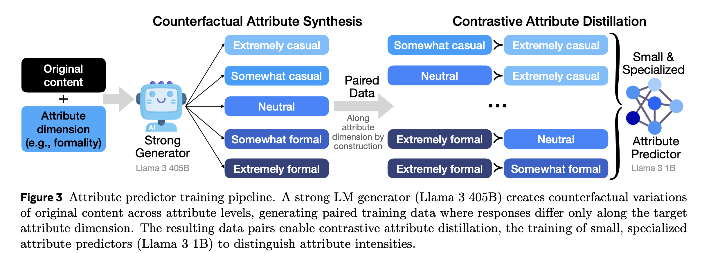

Training specialized attribute predictors with controlled generations
Purpose
Train specialized attribute predictors for each attribute (e.g., humor, formality) without relying on noisy real-world labels.
Overcome issues such as:
Confounds
Inconsistent or biased annotation
Ambiguous scalar ratings
Underrepresented attribute combinations
Figure 3. Counterfactual Attribute Synthesis

Illustration of controlled rewrites and pairwise supervision.
How It Works
Pick an attribute dimension (e.g., Formality)
Generate controlled variations (counterfactuals)
Use a strong teacher LM (e.g., Llama 3 405B) to rewrite a given text into versions that differ only in the target attribute, while keeping the semantic content the same. Example levels for Formality:
Extremely casual
Somewhat casual
Neutral
Somewhat formal
Extremely formal
Preserve all other attributes
When adjusting one attribute, keep others constant to isolate causality:
\[
s(y_{a,l}) \approx s(y),\quad A_a(y_{a,l}) \approx l,\quad A_k(y_{a,l}) \approx A_k(y) \; \forall k \neq a
\]
Form paired training data
Create pairs like (Somewhat formal) vs (Extremely formal) for the same base text to yield a known ordering along the target attribute.
Contrastive Attribute Distillation
Train a smaller, specialized attribute predictor (e.g., Llama 3 1B) to mimic the teacher’s discrimination between attribute levels. Attribute loss: